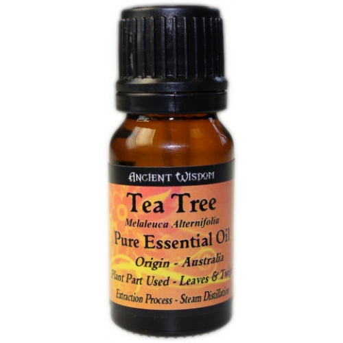
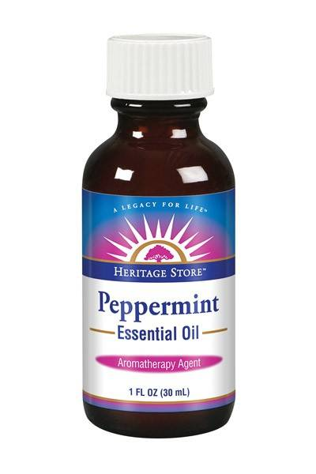
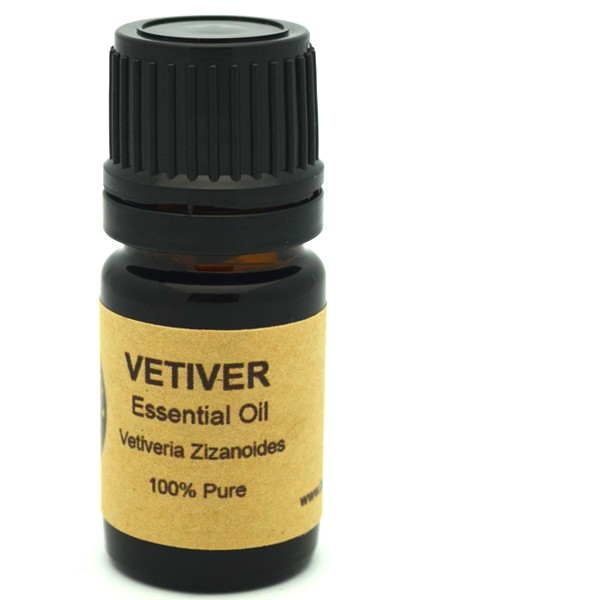
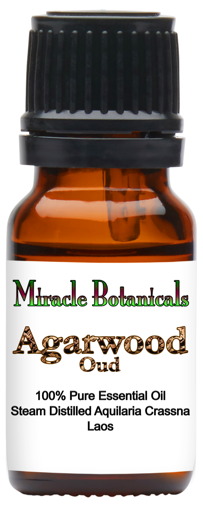
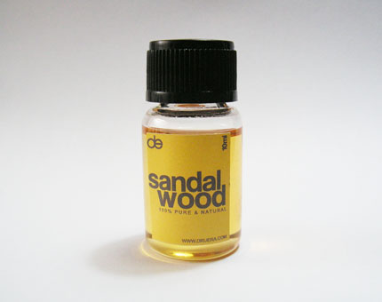
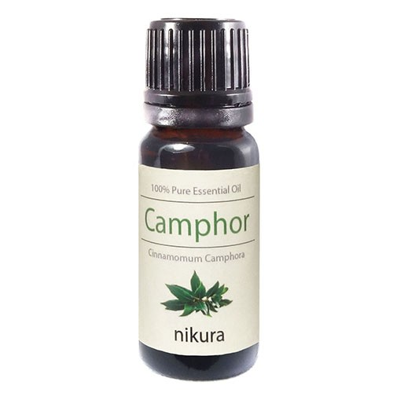
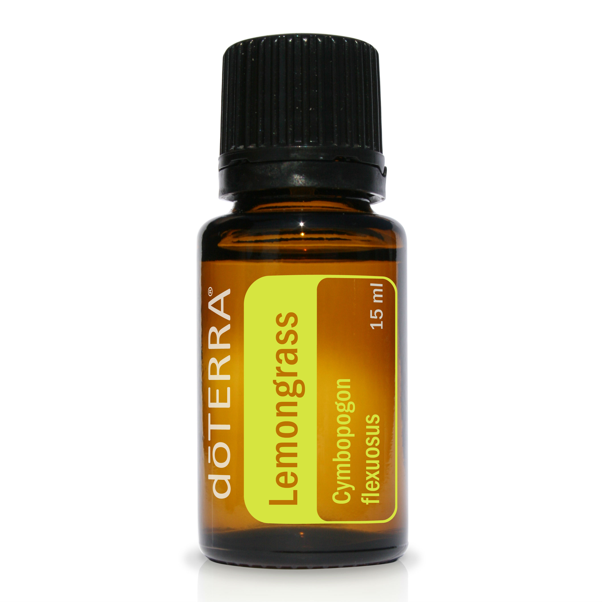

Tea Tree
This is where it all began.
I love this smell so much whenever and wherever. Unfortunately it doesn't have much staying power so it needs to be applied more frequently. It is both minty and camphory, eucalyptic.

Peppermint
A familiar, fresh smell
You won't smell like toothpaste. It’s nice on a hot day whe or when eating heaty foods.

Vetiver
This is one is pungent.
It’s probably the best deoderizing or odor masking agent I have. Its a deep woody musk and it sort of has the feel of jumping on a pile of fall leaves.

Oud aka Agarwood
A very complex and pungent smell, recommended to me by a friend. It’s both woody and floral. Really pure extracts of this are super expensive.
The scent actually comes from infecting an odorless tree with a certain mould that causes it to produce its distinct smell as a defense mechanism.

Sandalwood
My super cool ex boss only liked this scent and we shared an open office, so I could I only use this smell to detoxify and cover up the smell of human stress.
Its fine, but not my favorite.

Camphor
I love medicinal smells.
This one is in a lot of topical ointments, vapor rubs and emmolients.
Its fine, but not my favorite.

Lemongrass
My partner really likes this smell; it reminds him of his grandmother's lemongrass plant.
I like the smell because I like lemons!
We also use it in an infuser for our apartment.